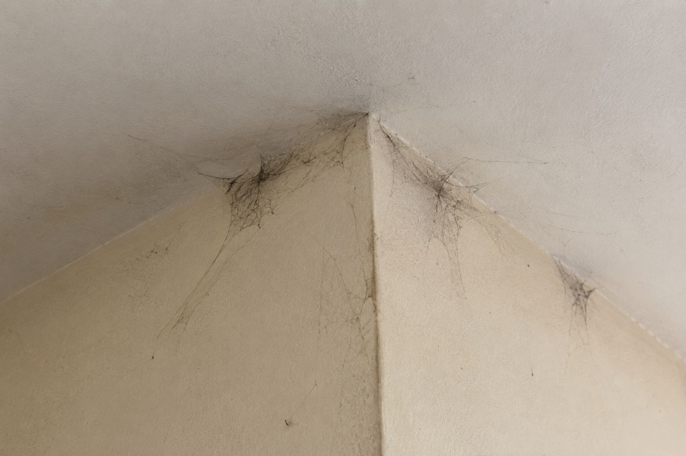
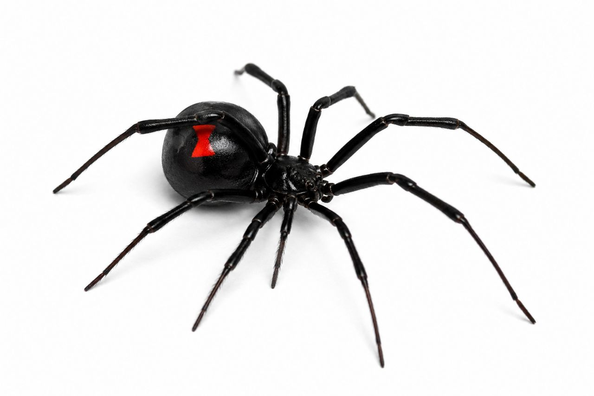

تصویر: عنکبوت و تار عنکبوت، یکی از آفات رایج در محیطهای داخلی
🕷️ عنکبوتها: شکارچیان حرفهای یا آفات خانگی؟ راهنمای جامع تشخیص، پیشگیری و کنترل اصولی
📅 آخرین بهروزرسانی: ۱۵ مرداد ۱۴۰۴ | ⏱ زمان مطالعه: ۱۰ دقیقه
مقدمه: موجودات هشتپا در خانه شما
اگر در گوشه و کنار خانه یا محل کار خود با تارهای عنکبوت رو به رو شدهاید، احتمالاً این سؤال برایتان پیش آمده که عنکبوتها جزو آفات محسوب میشوند یا نه. پاسخ کمی پیچیدهتر از یک «بله» یا «خیر» ساده است. در این مقاله جامع، به بررسی کامل این موجودات هشتپا از منظر علمی و بهداشتی میپردازیم و به شما خواهیم گفت که شرکت سمپاشی نانوفناوران بهداشت تهران، به عنوان یک مرجع تخصصی در کنترل آفات، چه رویکردی برای مدیریت حضور آنها در محیطهای انسانی دارد.
📌 عنکبوت چیست و چه نقشی در طبیعت دارد؟
عنکبوتها (عنکبوتیان) گروه بزرگی از بندپایان هستند که در اکثر نقاط کره زمین یافت میشوند. برخلاف تصور عمومی، عنکبوتها حشره محسوب نمیشوند؛ آنها از رده عنکبوتیان هستند و با حشرات تفاوتهای اساسی دارند، از جمله داشتن هشت پا (در مقابل شش پای حشرات) و دو بخش اصلی بدن (سرسینهای و شکم).
نقش کلیدی در اکوسیستم:
عنکبوتها شکارچیان ماهری هستند و عمدتاً از حشرات موذی مانند پشه، مگس، سوسک و سایر بندپایان کوچک تغذیه میکنند. به همین دلیل، در طبیعت به عنوان یک کنترلکننده طبیعی جمعیت آفات شناخته میشوند و حضور آنها در باغها و مزارع میتواند مفید باشد.

تصویر: عنکبوت در حال شکار حشره، نقش کلیدی در کنترل طبیعی آفات
اما وقتی عنکبوتها وارد منازل، ادارات، انبارها و مراکز صنعتی میشوند، موضوع کاملاً متفاوت است. وجود تارهای عنکبوت در محیطهای داخلی نه تنها ظاهر ناخوشایندی ایجاد میکند، بلکه میتواند نشانهای از وجود سایر حشرات در محیط باشد؛ چرا که عنکبوتها به دنبال منابع غذایی (حشرات) به آنجا جذب شدهاند.
🔍 آیا عنکبوتها برای انسان خطرناک هستند؟
این سؤال یکی از مهمترین دغدغههای مراجعین به شرکت سمپاشی نانوفناوران بهداشت تهران است. به طور کلی، اکثر قریب به اتفاق عنکبوتهایی که در ایران یافت میشوند، برای انسان بیخطر بوده یا خطر بسیار ناچیزی دارند. با این حال، چند نکته مهم وجود دارد:
- گزش عنکبوت: همه عنکبوتها دارای غدد سمی هستند، اما زهر بیشتر آنها برای انسان به اندازه نیش پشه یا زنبور عسل هم خطرناک نیست. با این حال، برخی افراد ممکن است به زهر عنکبوت واکنش آلرژیک نشان دهند که در موارد نادر میتواند جدی باشد.
- عنکبوتهای سمی ایران: گونههای خطرناک مانند «عنکبوت بیوه سیاه» (Latrodectus) یا «عنکبوت گوشهگیر قهوهای» (Loxosceles) در برخی مناطق ایران یافت میشوند. گزش این عنکبوتها میتواند علائمی مانند درد شدید، گرفتگی عضلانی، تهوع و در موارد بسیار نادر نکروز بافتی ایجاد کند و نیاز به مراجعه فوری به پزشک دارد.

تصویر: عنکبوت بیوه سیاه و عنکبوت گوشهگیر قهوهای، گونههای سمی خطرناک در ایران
- ترس و اضطراب: برای بسیاری از افراد، صرفاً دیدن عنکبوت یا تار آن (عنکبوتهراسی) باعث ایجاد استرس و اضطراب شدید میشود که خود یک مشکل بهداشت روانی است.
🛠️ دلایل حضور عنکبوتها در منزل و محل کار
- وجود منبع غذایی (حشرات): عنکبوتها به جایی میروند که غذا باشد. اگر در خانه یا محل کارتان پشه، مگس، سوسک یا سایر حشرات وجود داشته باشد، عنکبوتها به دنبال آنها میآیند.
- نقاط ورود: شکافهای دیوارها، درزهای پنجرهها، لولههای تأسیسات و دریچههای کولر.
- رطوبت و گرما: زیرزمینها، انبارها و حمامها مکانهای ایدهآلی برای زندگی آنهاست.
🛡️ روشهای صحیح و اصولی کنترل و دفع عنکبوت
راهکارهای پیشگیرانه خانگی
- مسدود کردن نقاط ورود: درزهای اطراف در و پنجره را با درزگیر بپوشانید.
- کاهش رطوبت: از تهویه مناسب در محیطهای مرطوب استفاده کنید.
- نظافت مستمر: جاروکشی منظم از گوشهها و جمعآوری تارهای عنکبوت.
- کنترل سایر حشرات: مهمترین گام! اگر منبع غذایی را کنترل کنید، عنکبوتها به طور طبیعی محل را ترک میکنند.
سمپاشی تخصصی و ریشهکنی اصولی
شرکت سمپاشی نانوفناوران بهداشت تهران با بهرهگیری از دانش فنی و تجهیزات مدرن، با نگاه سیستمی به کنترل آفات میپردازد.
- بازرسی دقیق و شناسایی: شناسایی گونه عنکبوت، نقاط ورود و منبع اصلی غذایی.
- روشهای نوین و ایمن: استفاده از سموم استاندارد و کمخطر با رویکرد مبارزه تلفیقی (IPM).
- ریشهکنی تضمینی: حذف منبع جذب عنکبوتها و ایجاد محیط پایدار.
💰 هزینه سمپاشی عنکبوت چقدر است؟
| عامل | تأثیر بر هزینه |
|---|
| مساحت و نوع مکان | منازل، ویلاها، ادارات و مراکز صنعتی هزینههای متفاوتی دارند. |
| شدت آلودگی | آلودگی شدید نیاز به عملیات بیشتر دارد. |
| نوع روش | سمپاشی تماسی، طعمهگذاری یا ترکیبی. |
❓ سوالات متداول
آیا سمپاشی عنکبوت برای کودکان خطرناک است؟
خیر، سموم استفادهشده توسط شرکت نانوفناوران با رعایت کامل استانداردهای بهداشتی انتخاب میشوند.
چه مدت بعد از سمپاشی عنکبوتها از بین میروند؟
اثر سمپاشی تماسی فوری است و عنکبوتهای موجود بلافاصله از بین میروند.
آیا عنکبوتها دوباره برمیگردند؟
اگر منابع غذایی حذف شوند و نکات پیشگیری رعایت شود، احتمال بازگشت بسیار کم است.
🏠 نکات طلایی برای جلوگیری از ورود عنکبوت
- همه پنجرهها را با توری ریز بپوشانید.
- شکافهای دیوار و درزهای درب را ببندید.
- رطوبت محیط را کاهش دهید.
- خانه را مرتباً جاروکشی و گردگیری کنید.
- تارهای عنکبوت را به محض دیدن جمعآوری کنید.
📌 نتیجهگیری
عنکبوتها به خودی خود آفات خطرناکی نیستند، اما حضور آنها در محیطهای داخلی یک زنگ خطر برای وجود آفات دیگر است. سمپاشی اصولی، پیشگیری هوشمندانه و دانش تخصصی سه کلید اصلی برای داشتن یک محیط زندگی و کاری عاری از عنکبوت است.
🚀 همین حالا اقدام کنید: